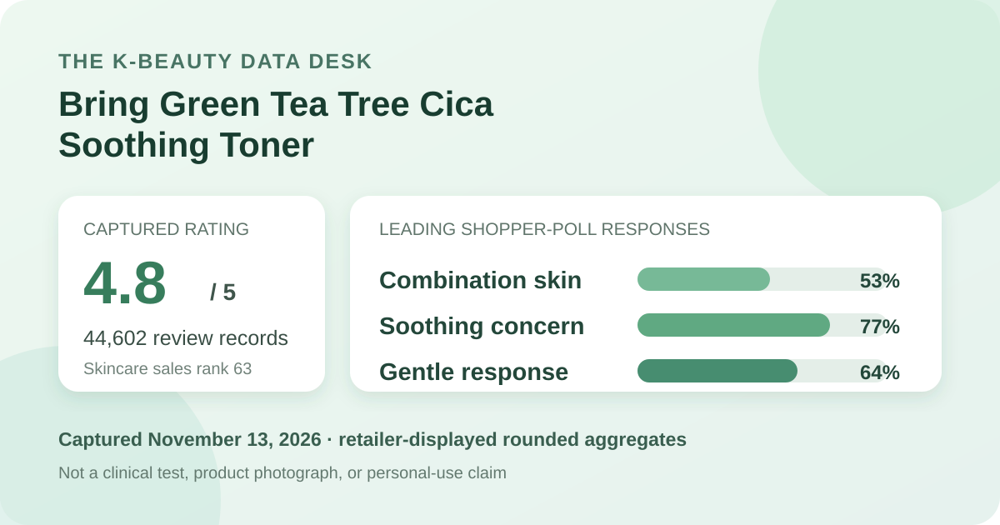
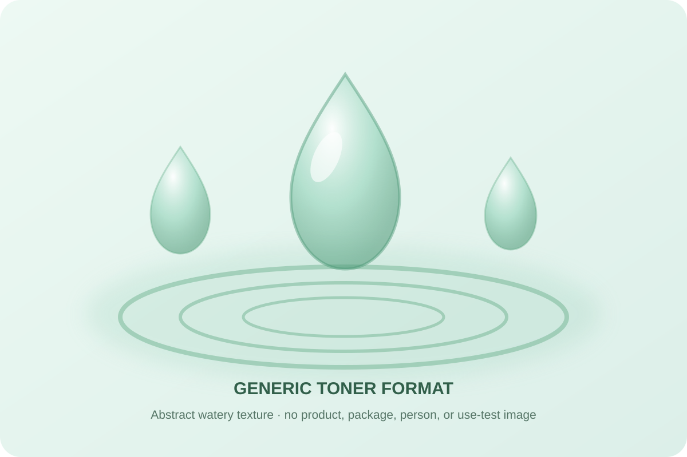

Data captured November 13, 2026. Olive Young Korea displayed the title “브링그린 티트리 시카 수딩 토너 (500ml/250ml)”; this article uses “Bring Green Tea Tree Cica Soothing Toner” as a readable English label. It uses only the retailer's title, rank, aggregate rating, star distribution, displayed shopper polls, and anonymous aggregate themes. It does not copy or translate individual review text, names, or photos, and it makes no claim of firsthand use.

The short version: Bring Green Tea Tree Cica Soothing Toner appeared at number 63 in the captured skincare sales ranking. The ranking, product header, and official review view agreed on the product, and the header and review view both showed 4.8 out of 5 from 44,602 records. The displayed star rows were 85% five-star, 11% four-star, 3% three-star, 0% two-star, and 1% one-star. Combination skin, soothing, and gentle led the shopper polls at 53%, 77%, and 64%. These are retail signals, not proof of calming, hydration, blemish treatment, or universal tolerance.
The displayed average was 4.8 stars from 44,602 review records. That is one of the larger captured feedback bases on this site and makes the aggregate less sensitive to a handful of new scores. It does not make the dataset experimental or representative of everyone who used the toner. The source does not disclose how linked sizes and promotional packs are pooled, who chose not to review, or how eligibility, incentives, moderation, and option changes shape the sample.
The official review statistics displayed these whole-number star shares:
The rows total 100% at the interface's displayed precision. The distribution is strongly positive, with 96% in the four- and five-star rows. Still, a high rating can reflect more than the liquid formula: size, discounting, bundle value, packaging, delivery, and expectations may all affect a retail score. The 1% one-star row also matters; the aggregate does not reveal why those ratings occurred, and this analysis does not reproduce individual accounts to supply a cause.
The skin-type panel displayed 53% combination, 31% oily, and 16% dry. Combination respondents formed a narrow majority, while the combined combination-and-oily share was 84%. That makes the captured poll especially useful as a map of who was represented in the interface, but it does not establish that the toner performs better for those groups.
The source did not show the panel denominator, participation rate, or a standardized skin-type assessment. Self-described skin type can change with climate, season, cleansing, medication, hormonal factors, and current irritation. The 16% dry share is not evidence that dry skin should avoid the product, and the larger combination and oily shares do not prove oil control, pore change, or reduced blemishes.
The concern panel showed 77% soothing, 23% moisture, and 1% wrinkle or brightening. These rounded values total 101%, which is consistent with whole-number display. The defensible interpretation is that soothing was the dominant concern label in this captured poll, not that 77% of purchasers achieved a measured calming result.
No standardized redness scale, lesion count, clinician grading, imaging, colorimetry, corneometer reading, transepidermal-water-loss measurement, comparator, or controlled time frame was available. The poll cannot tell us whether visible redness changed, whether a blemish improved, whether hydration increased, or whether the toner outperformed another routine. It records shopper responses inside a storefront interface.
The irritation panel displayed 64% gentle, 34% ordinary, and 3% felt irritation. The rows total 101% after rounding. Gentle was the leading response, but more than one third of displayed responses fell outside that leading category, and the irritation row was not zero.
This panel cannot predict an individual's reaction. It does not screen allergies, active dermatitis, a compromised barrier, medication use, or interactions with exfoliants, retinoids, acne treatments, fragrance, and other routine steps. “Gentle” is a shopper response rather than a dermatologist assessment, and the 3% irritation share does not encode severity, timing, cause, or duration.
The retailer's automated aggregate summary classified 88% of recent discussion as positive. It grouped anonymous discussion around three broad themes: the practicality of a large size, soothing impressions, and a light or fresh-feeling use experience. Those themes are useful as a topic map, but they are machine-generated labels over a recent subset, not a transparent sample of all 44,602 records.
This article does not repeat the summary's stronger efficacy language. A theme indicating that shoppers discuss soothing does not verify a biological effect. Likewise, a light-feeling theme does not establish viscosity, absorption speed, tack, fragrance, compatibility with makeup, or suitability for oily skin. The summary's sampling window, model, classification method, and error rate were not disclosed.

The retailer categorizes the item as a toner and offers 250 ml and 500 ml options. In general terms, facial toners are thin leave-on liquids used after cleansing and before thicker routine steps. That format description does not verify this product's viscosity, slip, scent, drying time, residue, spray behavior, cotton-pad use, layering, or compatibility with other products.
I did not open, pour, mist, smell, spread, or layer this toner. The local illustration uses abstract ripples and droplets rather than copying the actual bottle or retailer photography. Real sensory behavior depends on the current formula, amount used, delivery method, previous cleansing, temperature, humidity, and later steps. The aggregate themes and polls cannot replace a controlled texture or wear test.
“Tea Tree Cica” and “Soothing” are parts of the retailer-displayed product identity. They do not disclose ingredient percentage, plant species, extract ratio, active amount, delivery, stability, or clinical mechanism. No concentration is estimated here, and the rating cannot establish which ingredient—if any—caused a shopper's response.
The product name also does not prove acne treatment, antimicrobial action, redness reduction, barrier repair, or medical suitability. Those conclusions would require a verified current formula, defined endpoints, controlled conditions, an adequate comparator, and an appropriate observation period. People with a known plant allergy or a medical skin concern should rely on the exact current label and qualified guidance rather than the aggregate score.
Rank 63 describes one moment in Olive Young Korea's skincare sales list. It is not a quality rank or evidence that the toner is the sixty-third-best choice. Promotions, advertising, gifts, stock, seasonality, and short-term demand can all influence placement. The higher-ranked rejected candidates without matching rating and count were not replaced with guessed data.
The captured page offered 500 ml and 250 ml configurations and displayed a ₩27,000 reference price with an option-dependent promotional price starting at ₩18,900. Those storefront details can change. Before purchase, confirm the selected size, formula, seller, gift terms, expiry information, stock, return conditions, and final checkout price. A large format may affect value perception and usage style, but size does not establish efficacy or tolerance.
Bring Green Tea Tree Cica Soothing Toner was the first distinct unpublished ranked product whose ranking, detail page, and official review view exposed a consistent identity, rating, and review count. Its 4.8 average across 44,602 records, 85% five-star row, 77% soothing response, and 64% gentle response form a mature and favorable retail snapshot.
The careful conclusion stops at the storefront. The data does not prove calming, oil control, hydration, blemish treatment, ingredient concentration, or universal tolerance. The strongest use of this snapshot is to understand the shape and audience of the retailer feedback while keeping the nonzero irritation share, mixed gentleness panel, option pooling, and missing denominators visible.
The captured official statistics showed 4.8 out of 5 from 44,602 records. The star rows were 85% five-star, 11% four-star, 3% three-star, 0% two-star, and 1% one-star.
Combination skin led at 53%, followed by oily at 31% and dry at 16%. That describes representation, not proven suitability.
No. It is a rounded shopper-poll response, not a controlled redness, irritation, or clinical soothing result.
No. The panel cannot predict allergies, sensitivity, interactions, or individual tolerance.
No. The analysis uses retailer-displayed aggregates only and does not claim firsthand use.
Source: Olive Young Korea product listing for Bring Green Tea Tree Cica Soothing Toner, captured November 13, 2026. Rank, price, availability, gifts, counts, percentages, and linked configurations can change after capture.
Published by The K-Beauty Data Desk. This is an editorial analysis of retailer-displayed aggregates, not medical advice or a substitute for the current product label.
← All reviews · Review-volume rankings · Skin-poll explorer · Methodology